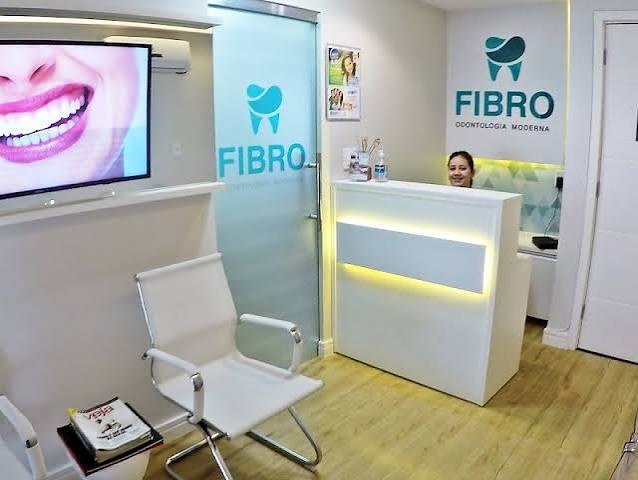
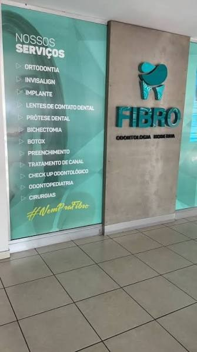
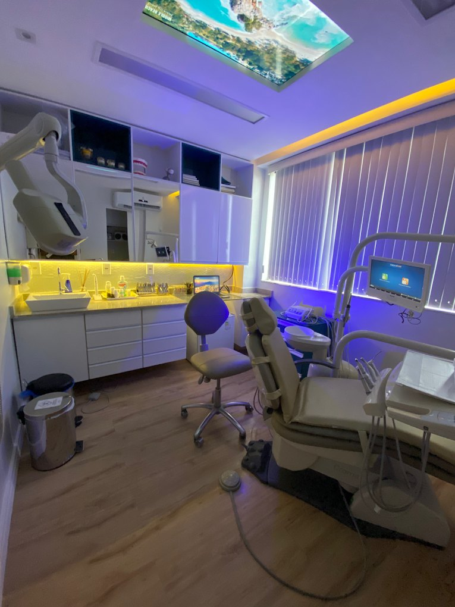

Odontologia moderna no Sollarium Mall, Flores
Transformar sorrisos e conectar pessoas.
Ortodontia, Invisalign, implante, lentes de contato dental, harmonização e atendimento infantil, tudo no mezanino do Sollarium Mall.
- 5,0 no Google, 109 avaliações
- Seg a sex, 9h às 18h. Sáb, 8h às 12h.
Nossos serviços
Os mesmos do painel na entrada da clínica. Toque em um serviço para ver pra quem é e como começa.
O que você quer resolver?
-
Aparelho fixo para alinhar os dentes e acertar a mordida.
- Pra quem é
- Adultos e crianças com dentes tortos, espaçados ou mordida fora do lugar.
- Como começa
- Na avaliação o dentista examina e pede fotos e radiografias para planejar o aparelho.
-
Alinhadores transparentes que você tira para comer e escovar. De perto, pouca gente percebe.
- Pra quem é
- Quem quer alinhar os dentes sem os bráquetes do aparelho fixo.
- Como começa
- A avaliação mostra se o seu caso é indicado. O tratamento é planejado no computador antes de começar.
-
Um pino de titânio no osso faz o papel da raiz, e por cima entra o dente novo.
- Pra quem é
- Quem perdeu um ou mais dentes e quer algo fixo, que não precisa tirar para limpar.
- Como começa
- Avaliação com exame de imagem para ver se o osso suporta o implante.
-
Lâminas finas de porcelana coladas na frente dos dentes para mudar cor, forma e tamanho.
- Pra quem é
- Quem se incomoda com dentes manchados, pequenos ou com espaços. Nem todo caso é indicado, e a avaliação diz se é o seu.
- Como começa
- Avaliação e planejamento do sorriso antes de qualquer preparo ou colagem.
-
Coroa, ponte ou prótese removível para repor dentes perdidos ou muito destruídos.
- Pra quem é
- Quem perdeu dentes e quer voltar a mastigar e sorrir sem se preocupar.
- Como começa
- Na avaliação o dentista indica o tipo de prótese que funciona melhor para a sua boca.
-
Retirada de parte da gordura das bochechas para afinar o contorno do rosto. É feita por dentro da boca, com anestesia local.
- Pra quem é
- Adultos que se incomodam com o rosto mais arredondado na região das bochechas.
- Como começa
- Avaliação do rosto para ver se é indicado e explicar como é o pós.
-
Toxina botulínica aplicada pelo dentista na harmonização do rosto e também em casos de bruxismo (ranger os dentes) ou de muita gengiva aparecendo no sorriso.
- Pra quem é
- Adultos que querem suavizar linhas de expressão ou que rangem os dentes.
- Como começa
- Avaliação para entender o que você quer e indicar onde e quanto aplicar.
-
Ácido hialurônico para dar volume e contorno, em lábios, queixo e outras áreas do rosto.
- Pra quem é
- Adultos que querem realçar ou equilibrar traços do rosto.
- Como começa
- Avaliação para planejar um resultado que combine com o seu rosto.
-
Limpa a parte de dentro do dente que está inflamada ou infeccionada e sela o canal, salvando o dente.
- Pra quem é
- Dor forte, dor que acorda à noite, sensibilidade que não passa ou dente escurecido.
- Como começa
- Avaliação com radiografia. Se a dor estiver forte, diga isso no WhatsApp.
-
Consulta de rotina para encontrar problemas cedo, quando o tratamento é mais simples.
- Pra quem é
- Quem está há tempo sem ir ao dentista ou quer manter a boca em dia.
- Como começa
- Exame completo e orientação do que fazer em casa.
-
Atendimento odontológico para crianças, no tempo delas, para a consulta não virar trauma.
- Pra quem é
- Crianças, da primeira consulta ao acompanhamento da troca dos dentes.
- Como começa
- O responsável acompanha a consulta do começo ao fim.
-
Extração de dentes, inclusive siso, e outras cirurgias na boca, também em crianças.
- Pra quem é
- Quem tem dente que precisa sair, siso causando dor ou indicação de cirurgia de outro dentista.
- Como começa
- Avaliação com exame de imagem e orientação clara para o antes e o depois.
Não achou o que procura? Pergunte no WhatsApp.
Como é a primeira consulta
Você chama no WhatsApp
Conta o que quer tratar e escolhe o dia e o horário que cabem na sua rotina.
Avaliação sem pressa
O dentista examina, mostra o que encontrou e tira suas dúvidas. Se for criança, o responsável acompanha tudo.
Plano e orçamento explicados
Você leva o plano de tratamento para pensar. Só começa quando estiver seguro.

Um consultório feito pra você relaxar na cadeira
Quem já foi costuma comentar duas coisas: o ambiente climatizado e a TV no teto.
- TV no teto
- Fica bem em cima da cadeira. Você assiste enquanto é atendido, e o tempo passa mais rápido.
- Climatizado
- Ambiente fresquinho do começo ao fim da consulta, mesmo no calor de Manaus.
- A vista
- É outro detalhe que os pacientes lembram quando falam da sala no Sollarium Mall.
- Equipe junto
- Antes e depois do atendimento, alguém explica cada passo e o que fazer em casa.

Horários
Seg a sex, 9h às 18h. Sáb, 8h às 12h.
| Segunda | 9h às 18h |
|---|---|
| Terça | 9h às 18h |
| Quarta | 9h às 18h |
| Quinta | 9h às 18h |
| Sexta | 9h às 18h |
| Sábado | 8h ao meio-dia |
| Domingo | Fechado |
Como chegar
- Sollarium MallAv. Prof. Nilton Lins, 1591, Flores, Manaus
- Vá ao mezaninoEntrando no prédio, siga para o mezanino
- Sala 3Procure o logo da Fibro na entrada
Dúvidas que chegam no WhatsApp
Se a sua não estiver aqui, é só perguntar.
A Fibro Odontologia atende criança?
Atende. A Fibro Odontologia, no Ed. Sollarium Mall (Flores), faz odontopediatria, aparelho em crianças e cirurgias em crianças. O responsável acompanha a consulta do começo ao fim.
A Fibro faz Invisalign?
Faz. A Fibro Odontologia, no Sollarium Mall (Av. Prof. Nilton Lins, Flores), trabalha com alinhadores Invisalign. O primeiro passo é a avaliação, que mostra se o seu caso é indicado para alinhador.
A Fibro Odontologia faz implante?
Faz, junto com prótese, no Ed. Sollarium Mall, bairro Flores. Na avaliação, o dentista pede exame de imagem para ver se o osso suporta o implante.
A Fibro faz harmonização facial?
Faz. A harmonização orofacial é reconhecida pelo Conselho Federal de Odontologia. Na Fibro são feitos botox, preenchimento e bichectomia, sempre depois de uma avaliação do rosto.
A Fibro Odontologia abre sábado?
Abre. Sábado das 8h ao meio-dia. De segunda a sexta, das 9h às 18h. Domingo fechado.
Como agendar uma avaliação na Fibro?
Pelo WhatsApp (92) 98406-8131. Diga o que você quer tratar e a equipe combina o dia e o horário.
Onde fica a Fibro Odontologia?
No Ed. Sollarium Mall, Av. Prof. Nilton Lins, 1591, Mezanino, Sala 3, bairro Flores, Manaus-AM.
Quando a Fibro passa o orçamento?
Na consulta de avaliação. O dentista examina, explica o que encontrou e apresenta o plano de tratamento e o orçamento antes de qualquer procedimento.
A partir de que idade a Fibro coloca aparelho em criança?
Depende da dentição de cada criança. Na avaliação o dentista explica se já é hora de tratar ou se vale esperar e acompanhar.
Estou com dor de dente. A Fibro atende?
Chame a Fibro no WhatsApp e conte há quanto tempo dói e como é a dor. A equipe orienta sobre o primeiro horário disponível para avaliação.
Tenho medo de dentista. Como é o atendimento na Fibro?
O consultório é climatizado, tem uma TV no teto em cima da cadeira para distrair durante o atendimento, e a equipe explica cada passo antes de fazer.
#VemPraFibro
Mande uma mensagem, conte o que você quer tratar e marque sua avaliação.
Agendar avaliação no WhatsAppPrefere ligar? (92) 98406-8131